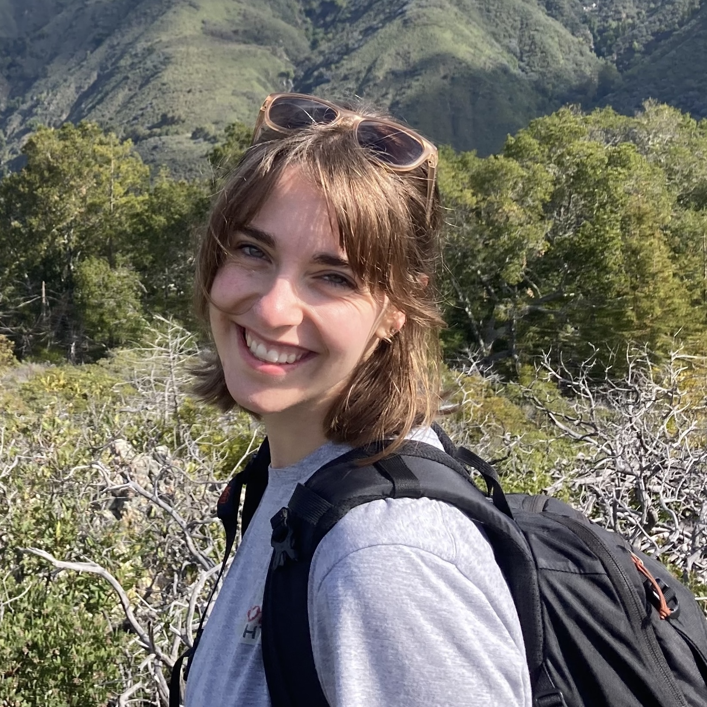

Hi there, thank you for visiting my website! My name is Alaina Stockdill and I am a third year Applied Math graduate student at the Univeristy of California, Davis. After finishing my B.S. at Whitworth University, I was inspired to continue my education in math to pursue research applications ecology. Since coming to Davis, I have begun to pursue research using ecological networks to model community dynamics in rocky intertidal ecosystems in the major upwelling zones.